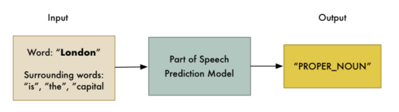
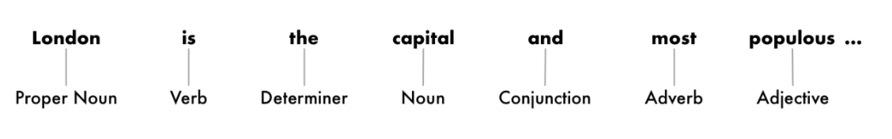
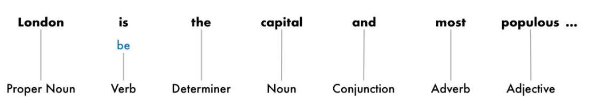
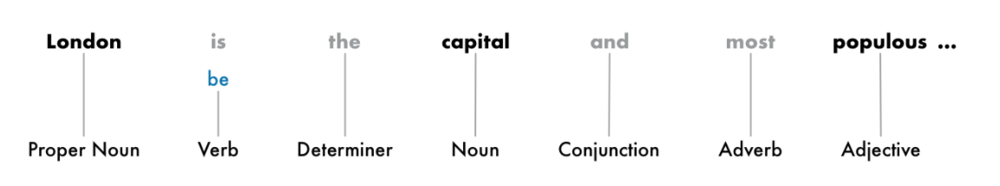
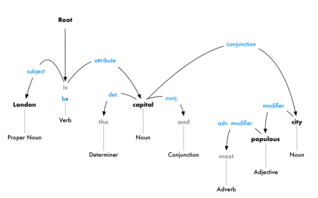
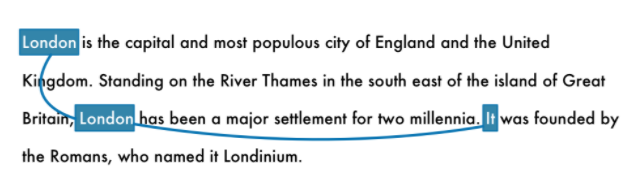

Introduction to NLP#
To get started, we need some common ground on the NLP terminology - the terms are presented in the processing order of an NLP pipeline. This paragraph is heavily borrowed from here.
Term |
Definition |
|---|---|
Segmentation |
The first step in the pipeline is to break the text apart into separate sentences. Coding a Sentence Segmentation model can be as simple as splitting apart sentences whenever you see a punctuation mark. But modern NLP pipelines often use more complex techniques that work even when a document isn’t formatted cleanly. Take for example the sentence “London is the capital and most populous city of England and the United Kingdom.” |
Word Tokenization |
The next step in our pipeline is to break this sentence into separate words or tokens. This is called tokenization. “London”, “is”, “ the”, “capital”, “and”, “most”, “populous”, “city”, “of”, “England”, “and”, “the”, “United”, “Kingdom”, “.” |
Part of Speech Tagging |
The next step tags each word with a classification result of its part - whether it is a noun, a verb, an adjective and so on. We can do this by feeding each word (and some extra words around it for context) into a pre-trained part-of-speech classification model: |
 |
|
 |
|
Lematization |
This is one of the stages of vocabulary normalization. At this stage we are figuring out the most basic form or lemma of each word in the sentence. |
 |
|
Stop words identification |
This is one of the stages of vocabulary normalization. Stop words are common words in any language that occur with a high frequency but carry much less substantive information about the meaning of a phrase. |
 |
|
Dependency Parsing |
The next step is to figure out how all the words in our sentence relate to each other. This is called dependency parsing. The goal is to build a tree that assigns a single parent word to each word in the sentence. The root of the tree will be the main verb in the sentence. In addition to identifying the parent word of each word, we can also predict the type of relationship that exists between those parent and child. This parse tree shows us that the subject of the sentence is the noun “London” and it has a “be” relationship with “capital”. We finally know something useful — London is a capital. Dependency parsing in NLP stacks circa 2017 was heavily based on deep learning architectures - demo |
 |
|
Named Entity Recognition (NER) |
The goal of Named Entity Recognition, or NER, is to detect and label nouns with the real-world concepts that they represent. NER systems aren’t just doing a simple dictionary lookup. Instead, they are using the context of how a word appears in the sentence and a statistical model to guess which type of noun a word represents. demo |
Coreference Resolution |
Coreference resolution is the task of finding all expressions that refer to the same entity in a text. It is an important step for a lot of higher level NLP tasks that involve natural language understanding such as document summarization, question answering, and information extraction. Coreference resolution is one of the most difficult steps in our pipeline to implement |
 |
Python and almost all programming languages are formal. They define a strict set of rules called a grammar that the programmer must follow religiously. In addition formal languages also define semantics or meaning of the program via a set of rules. So the exit code 0 after the execution of a routine has the meaning of successful termination but a 1 the opposite. The English language on the other hand is “free wheeling” so to speak due to its ambiguity (“he met his maker”) and size.
Same context, different meaning#
“The food in this restaurant was good, not bad at all”
“The food in this restaurant was bad, not good at all.”
Different context alltogether#
“The bank’s profits eroded soon after the 2008 crisis”
“The river’s bank eroded after the 2008 floods”
To capture the fuzziness of natural language we define language models probabilistically. We do not speak of a single meaning for a sentence - rather we speak of a probability distribution over possible meanings. In the next section we will start to quantify such probabilistic language models in detail.